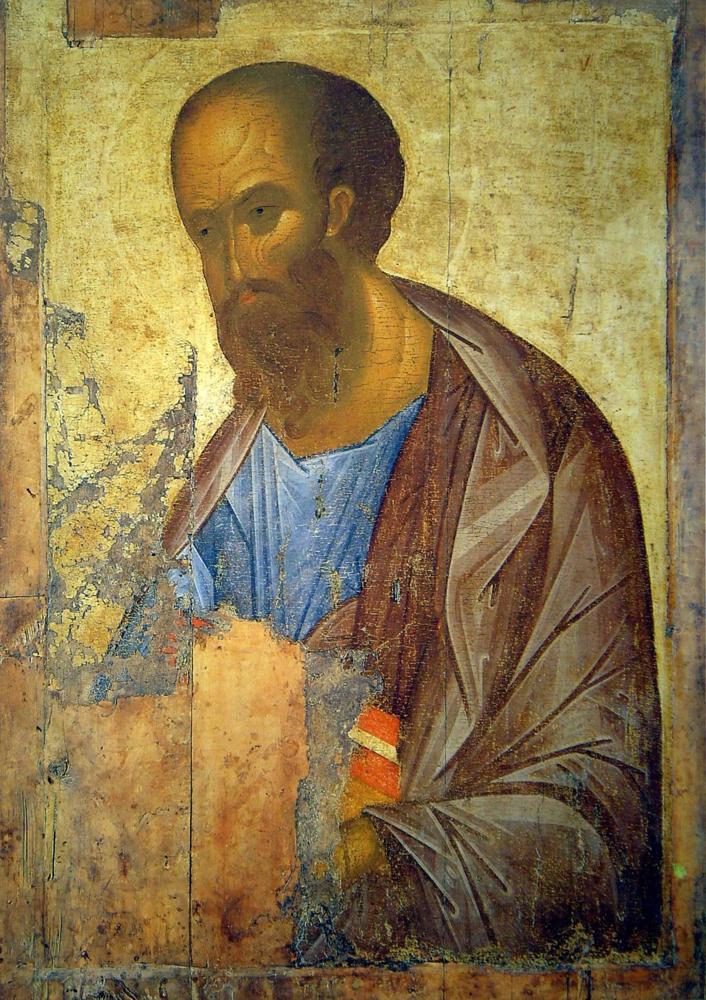
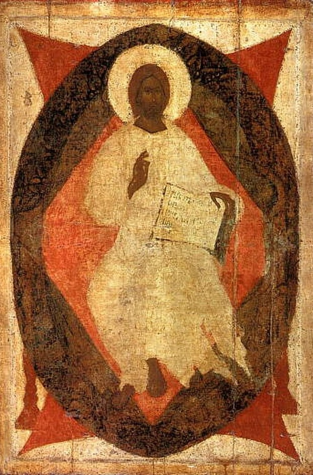
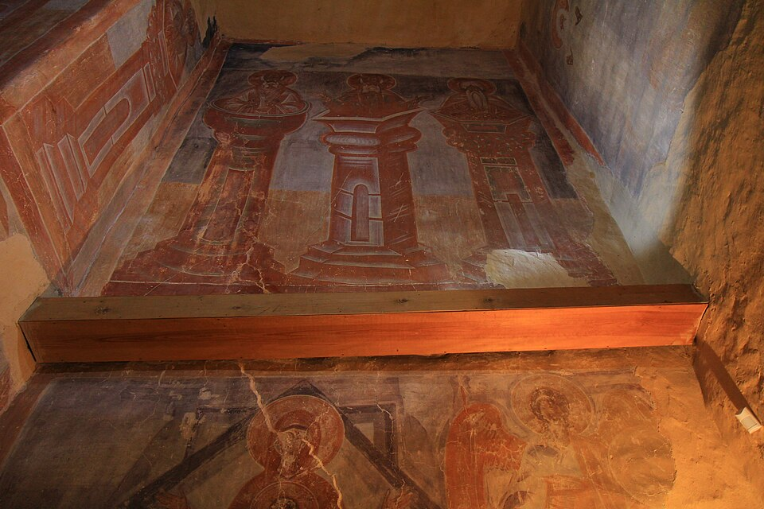
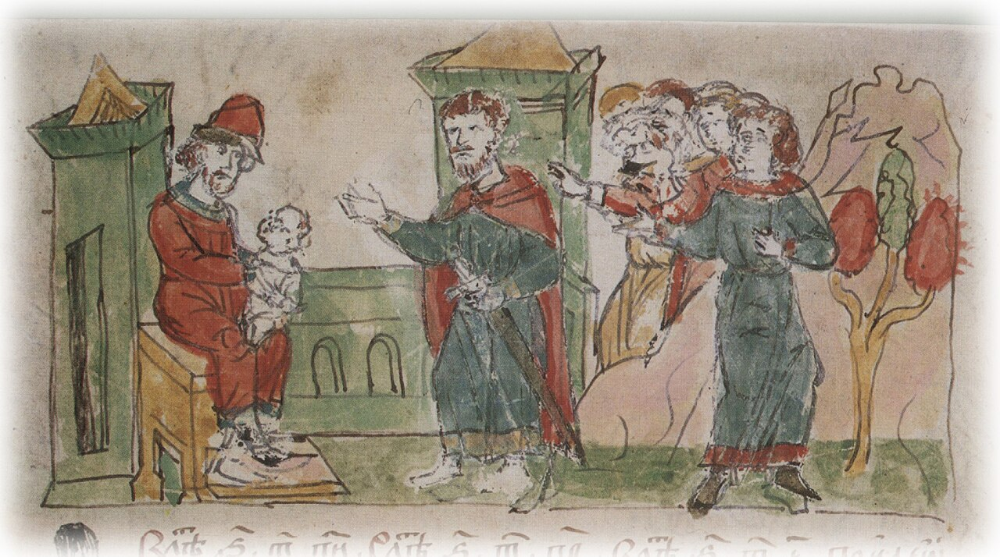
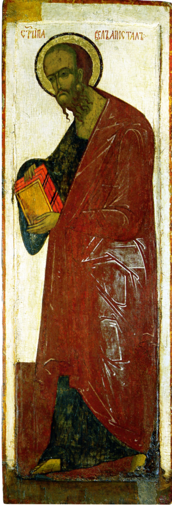

Цель: Проследить, как встреча Византии и Руси в лице Феофана Грека и Андрея Рублёва отразила переход общества от борьбы к духовному созиданию.
8 сентября 1380 года на Куликовом поле сошлись две силы. С одной стороны — Мамаева орда, с другой — объединённые русские полки, впервые вышедшие биться не за княжеский удел, а за всю землю Русскую. Победа досталась дорогой ценой, но она случилась. И Русь, наконец, выдохнула: мы можем. Мы можем побеждать. Мы можем быть вместе.
Именно в этот момент в Москве, которая становится бесспорным духовным и политическим центром, встречаются два гения. Один — пришлый, византиец Феофан Грек, принёсший на Русь всё мастерство умирающей Империи, её страстный, почти трагический порыв. Другой — русский инок Андрей Рублёв, которому суждено было переплавить эту страсть в гармонию. Динамичные, энергичные образы Феофана и просветленные, гармоничные лики Рублёва передают сложный путь от борьбы и напряжения к внутреннему миру и духовной консолидации.

Этот монументальный образ входил в состав грандиозного иконостаса Успенского собора во Владимире, созданного по велению великого князя Василия Дмитриевича. Деисусный чин выражает идею заступничества и милосердия: святые предстоят перед Христом, моля его о роде человеческом.
Образ апостола Павла, созданный Рублёвым, поражает своей одухотворенностью и величием. Это уже не суровая экспрессия новгородских фресок, а спокойная уверенность, глубокая созерцательность и духовная сила. Апостол Павел предстает как мудрый учитель, строитель церкви, чей образ перекликается с идеей созидания единого государства.

Эта икона является центральным образом деисусного чина из Благовещенского собора Московского Кремля. «Спас в силах» раскрывает образ Иисуса Христа как грозного Судии и Царя Славы, грядущего в конце времен. Он восседает на престоле в окружении небесных сил.
Широкая, уверенная манера письма, насыщенный колорит (интенсивный красный цвет «славы») передают идею небесной мощи и славы, которая в сознании современников ассоциировалась с поднимающейся Москвой, утвердившей свое первенство и одержавшей победу над Мамаем.

Хотя эти фрески были созданы в Новгороде, они являются ключом к пониманию всего творчества Феофана Грека, который после работы в Новгороде переехал в Москву, где его стиль оказал огромное влияние на формирование московской школы живописи.
Феофан привнес в московское искусство дух византийской утонченности и, одновременно, мощной внутренней динамики. Его герои находятся в состоянии глубокого молитвенного экстаза, они полностью погружены в себя и полны «трагического пафоса». Эта напряженность была созвучна эпохе борьбы.

Радзивилловская летопись – один из ценнейших памятников древнерусского летописания. Она содержит более 600 великолепных миниатюр, которые являются, по сути, «окном» в мир средневековой Руси.
Включение миниатюры из этой летописи в программу позволяет зрителю увидеть глазами человека той эпохи сцены переговоров с ордынскими послами, выплаты дани и военных походов. Это не просто иллюстрация, а исторический документ, передающий атмосферу времени и переход от подчинения к дипломатии и открытому сопротивлению.

Эта икона, хранящаяся в собрании Государственного Русского музея, представляет иную, новгородскую, линию развития искусства начала XV века. Апостол Павел здесь изображен в соответствии с иконографической традицией: лысеющим, с бородой, в красно-зеленых одеяниях. Образ строг, лаконичен и монументален.
Сопоставление этого экспоната с рублёвским «Апостолом Павлом» дает уникальную возможность увидеть различие двух художественных центров. Если московское искусство тяготеет к плавности и лиризму, то новгородское сохраняет верность большей суровости и простоте. Это подчеркивает многообразие путей, по которым развивалась русская культура.
Мы прошли путь от грозных, динамичных образов Феофана до просветлённой мудрости рублёвского «Апостола Павла». Феофан показал, какова цена борьбы: его святые — это воины духа. Рублёв же показал, ради чего эта борьба велась: ради тишины, мира и внутреннего согласия.
Москва впитывала и то, и другое. Она брала у Феофана энергию, у Рублёва — мудрость, и копила силы для следующего, финального шага. Искусство этой программы — это карта пройденного пути, на которой отмечены и крутые подъёмы, и тихие долины перед последним рывком к полной независимости.